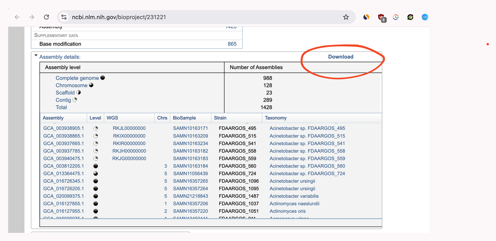

Mastering Kraken2 - Part 4 - Build FDA-ARGOS Index
Mastering Kraken2
Part 2 - Classification Performance Optimisation
Part 3 - Build custom database indices
Part 4 - Build FDA-ARGOS index (this post)
Part 5 - Regular vs Fast Builds (upcoming)
Part 6 - Benchmarking (upcoming)
Introduction
In the previous post, we learnt how to build a custom index for Kraken2.
FDA-ARGOS1 is a popular database with quality reference genomes for diagnostic usage. Let's build an index for FDA-ARGOS.
FDA-ARGOS Kraken2 Index
FDA-ARGOS db is available at NCBI2 from which we can download the assembly file.

We can extract accession numbers from the assembly file and then download the genomes from these accession ids.
$ grep -e "^#" -v PRJNA231221_AssemblyDetails.txt | cut -d$'\t' -f1 > accessions.txt $ wc accessions.txt 1428 1428 22848 accessions.txt $ ncbi-genome-download --section genbank --assembly-accessions accessions.txt --progress-bar bacteria --parallel 40
It took ~8 minutes to download all the genomes, and the downloaded file size is ~4GB.
We can use kraken-db-builder3 tool to build index from these genbank genome files.
# kraken-db-builder needs this to convert gbff to fasta format $ conda install -c bioconda any2fasta $ kraken-db-builder --genomes-dir genbank --threads 36 --db-name k2_argos
It took ~30 minutes to build the index.
Conclusion
We have built a Kraken2 index for the FDA-ARGOS database on 2024-Aug-24.
- FDA-ARGOS Library
- Kraken2 Gzipped Index file (gzip size: 2.6GB, index size: 3.8GB, md5sum: 1dd946d2e405dfec35ed3e319e9dfeac)
- Kraken2 Inspect file
In the next post, we will look at the differences between regular and fast builds.
Need further help with this? Feel free to send a message.

Anand Reddy Pandikunta (ChillarAnand)
Improving Health & Wealth with Technology